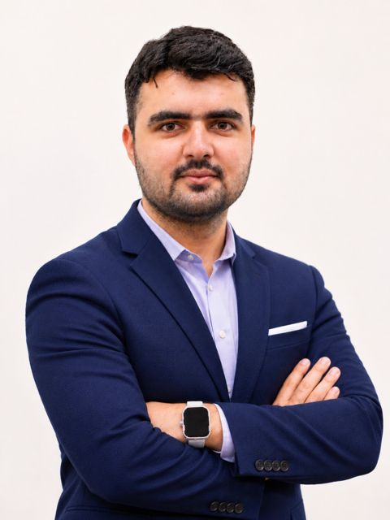

DOP-C02Professional
AWS Certified DevOps Engineer – Professional
Amazon Web Services
AWS · Microsoft Azure · Oracle Cloud / Kubernetes · Terraform · CI/CD
I run and secure hybrid cloud platforms for 700 users and 400+ servers, and build the automation that ships software faster. Five years across AWS, Azure, OCI and on-premises, from Kubernetes delivery pipelines to GPU virtual desktops and disaster recovery.

Seven designs I've drawn and documented. Open one to see how it works, step by step.
Verified credentials from AWS and Microsoft, covering DevOps, solution architecture, administration, virtual desktop and AI app development.
Amazon Web Services
Microsoft
Microsoft
Microsoft
Microsoft
Microsoft
Seven designs across cloud platforms, hybrid networking, delivery automation, end-user computing, governance, security and recovery. Each shows the request path, the supporting controls and where I have run it in production.
Amazon EKS · High availability · GitOps · Infrastructure as code
A highly available microservices platform spread across three Availability Zones. Traffic is filtered at the edge, routed into private EKS subnets and scaled automatically, while every change arrives through a Git-driven pipeline.
GitHub Actions builds and tests, pushes images to ECR, and Argo CD syncs the cluster to Git. Terraform provisions the VPC, EKS and data tier.
IRSA gives each workload its own IAM role. Secrets live in Secrets Manager and data is encrypted with KMS keys.
Prometheus and Grafana for cluster and app metrics, CloudWatch for AWS services and logs.
Every tier runs in three AZs, so losing one zone doesn't take the platform down.
At Sintov I containerized applications with Docker and ran them on Amazon EKS and ECS, keeping production Kubernetes available through replication, stress testing and custom autoscaling.
Microsoft Azure + AWS + on-premises · Secure connectivity · Unified operations
An on-premises datacenter, an Azure hub-and-spoke network and AWS workloads joined into one secure, centrally managed environment with a single identity.
Microsoft Entra ID is the single sign-in, with SSO and MFA federated to AWS IAM Identity Center.
Terraform builds both clouds; Azure Arc brings on-prem and AWS servers into Azure management.
At LMKR I run site-to-site VPNs between on-premises and AWS/Azure, monitor 400+ servers (300 on-prem, 100+ cloud) with SCOM, Azure Monitor and CloudWatch, and run an OCI load balancer with SSL across 30 VMs.
Jenkins or GitHub Actions · Secure build · GitOps deployment
A delivery pipeline that takes a code change through build, quality and security checks, then releases it to Kubernetes in controlled stages with automatic rollback.
Blue/green or canary rollouts with health checks; a failed check rolls back automatically.
Terraform keeps each environment identical, so what passes in Staging behaves the same in Production.
At Sintov I built and maintained CI/CD for 30+ projects with Jenkins, GitHub Actions and parallel build agents, and made deployments 82% faster.
Secure end-user computing · Graphics-intensive workloads · Golden image
Secure remote access to a graphics-heavy engineering application. Users sign in once, pass identity checks, and land on standard or NVIDIA GPU session hosts built from one versioned image.
One image is captured and versioned in Azure Compute Gallery; new hosts are built from it instead of configured by hand.
Intune applies device policy, scaling plans power hosts up and down by demand, and Azure Monitor with Log Analytics tracks sessions.
At LMKR I designed and deployed AVD for 50 users on 50 session hosts, including GPU hosts. The golden-image approach cut host build time by 80%.
Enterprise foundation · Management groups · Policy guardrails
An enterprise Azure foundation where every new workload lands in a subscription that already has networking, security, logging and cost controls in place.
Budgets and alerts per subscription, with tags that show who owns what.
The whole foundation is deployed with Bicep and Terraform, so it can be rebuilt or extended the same way.
At LMKR I manage Azure VMs, storage, Application Gateway/WAF, Site Recovery and Azure DevOps, and I'm moving privileged roles into PIM with MFA on activation. Backed by the Azure Solutions Architect Expert (AZ-305) certification.
Identity-first security · Least privilege · Detect and respond
Every sign-in is checked for who the user is, how healthy their device is and how risky the sign-in looks before access is granted to Microsoft 365, Azure or business apps.
Sensitivity labels and DLP stop sensitive files leaving; Purview governs data across the estate.
Key Vault holds keys and secrets; private endpoints keep services off the public internet.
At LMKR I enforced MFA for 100% of 700 users across Microsoft applications using Conditional Access, together with SSO and Entra ID Protection policies.
Cross-region resilience · Backup protection · Tested recovery runbooks
A cross-region design built around agreed recovery objectives: traffic fails over automatically, data is replicated and backed up in protected form, and recovery steps are documented and tested.
Azure Monitor alerts on replication and backup health; Azure Policy makes sure new resources are protected.
Documented, tested recovery plans so failover is a known procedure, not an improvisation.
At LMKR I protect 60 TB of enterprise data (50 TB on-prem, 10 TB cloud) with Azure Backup, AWS Backup, Veeam and DPM 2025, on IBM tape libraries, Dell EMC Unity SAN and TrueNAS, and I manage Azure Site Recovery.
Working on cloud architecture, DevOps automation or cloud security? I'm always glad to connect with engineers, teams and businesses and exchange ideas on building reliable, secure platforms.